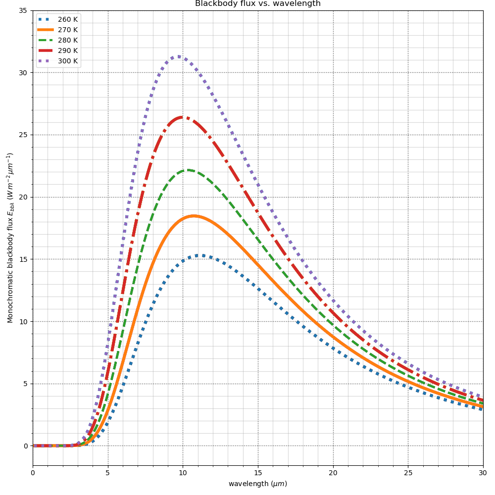

7. Week 7¶
Week 7 topics for Monday
Week 7 topics for Wednesday
Exam will have an equation sheet and this figure:
equation sheet Note! You won’t need all these equations. In particular, use the planck figure if you need blackbody radiation values.
